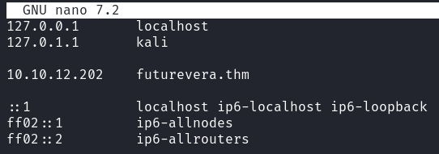
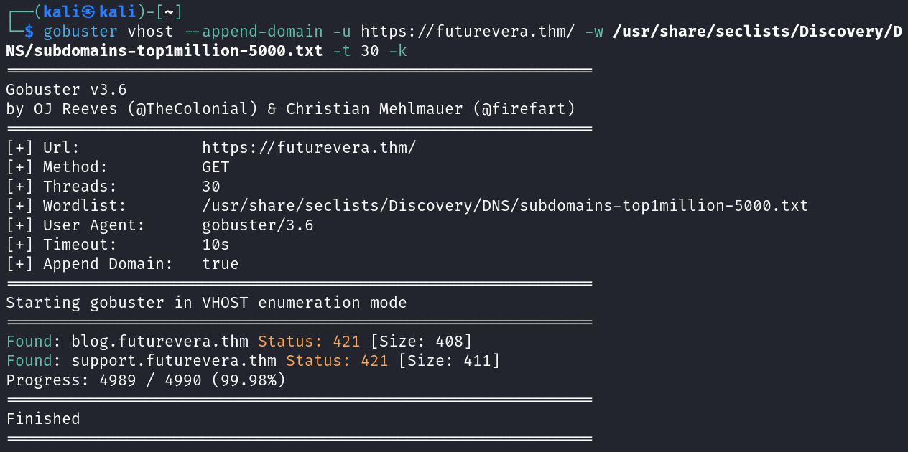
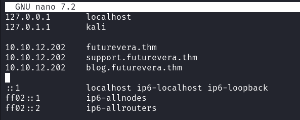
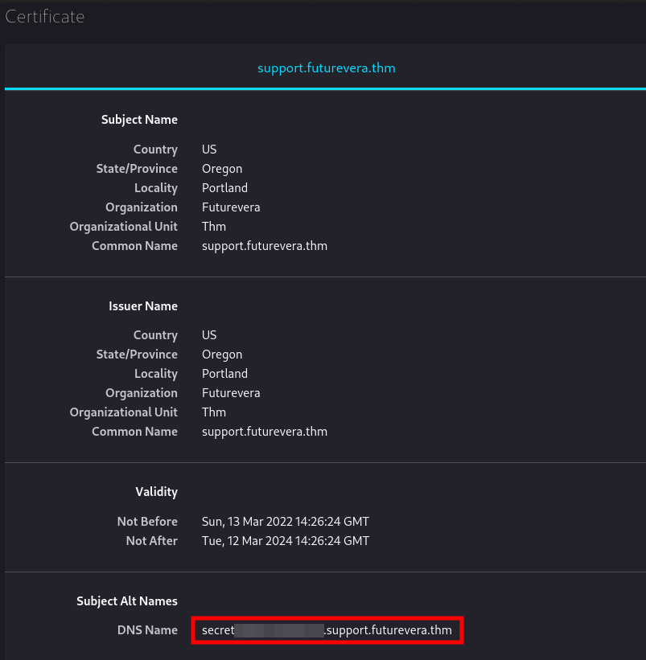
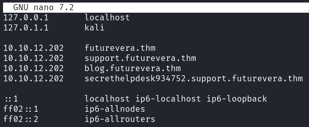
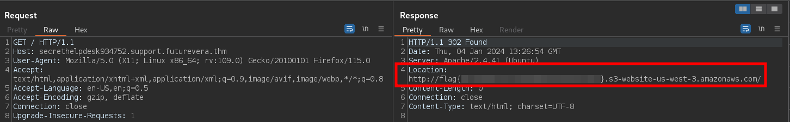

TakeOver [TryHackMe]
- Difficulty: Easy
- Link: https://tryhackme.com/room/takeover
Introduction
Hi everyone and welcome to my first write-up. This is the write-up of TakeOver room on TryHackMe. It is an easy room based on subdomain enumeration. I hope you enjoy it!
Information Gathering
Before starting with the enumeration phase, add futurevera.thm to the
/etc/hosts file as suggested by the challenge description:
"don't forget to add the MACHINE_IP in /etc/hosts for futurevera.thm"

Now start scanning the target with nmap. The following ports are open on the target:
- 22 (SSH)
- 80 (HTTP)
- 443 (HTTPS)
Visit the website both on port 80 and 443 but nothing relevant is found.
Now start enumerate subdomains with gobuster in vhost mode as follow:

I found the following 2 subdomains:
-
support.futurevera.thm -
blog.futurevera.thm
Add them to the /etc/hosts file as follow:

Flag
Now enumerate both subdomains found. The nmap scan shows the same output
found before on futurevera.thm.
SSL certificates may hold some useful information so check them on both subdomain.
Nothing interesting was found on blog.futurevera.thm. On
support.futurevera.thm instead, the SSL certificate hold a new subdomain as show in the
following picture:

Now add the secret***.support.futurevera.thm subdomain to the
/etc/hosts file as follow and enumerate it:

On port 443 (https) is hosted the same site found on futurevera.thm.
Instead, visit the website on port 80 (http) and look at the Location header in the
response to
get the flag:

Conclusion
This first write-up was a lot of fun to write, and the room taught me how to enumerate
subdomains.
If you want to go deeper with subdomain enumeration, I recommend you some useful resources: